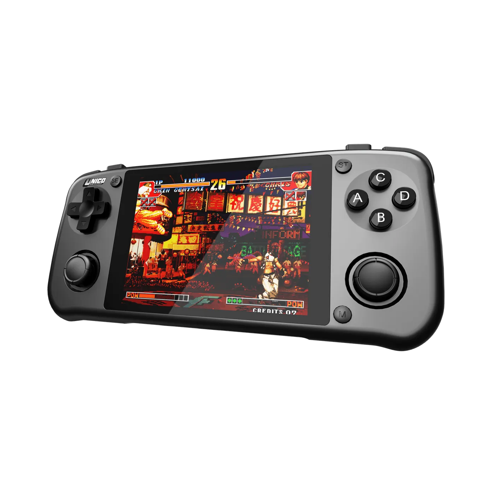
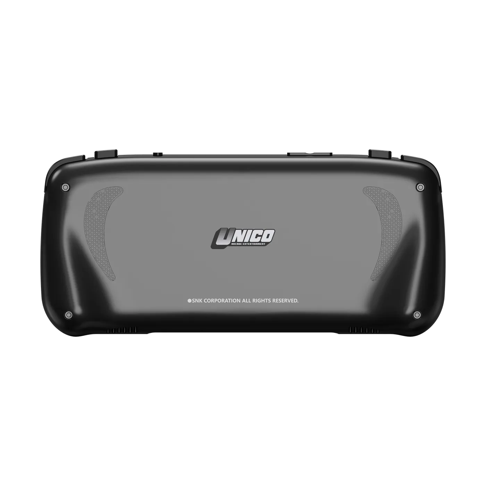

橫式造型
整機扁長、螢幕置中，肩鍵位於機身上緣。握持時雙手可同時碰到搖桿與面鍵，適合長時間對戰或動作遊戲。

Overview
Pocket 是橫式掌機，左右手自然握住十字鍵、ABCD 與雙搖桿。機身約 156×77.6×17 mm，USB-C 充電，內建 3500mAh 電池；官方標示最長約 8 小時，實際續航會隨亮度與遊戲而變。顏色為黑、灰兩款。
Highlights
整機扁長、螢幕置中，肩鍵位於機身上緣。握持時雙手可同時碰到搖桿與面鍵，適合長時間對戰或動作遊戲。

4 吋 IPS、960×720、4:3，畫面比例貼近經典街機。正面可見十字鍵、ABCD、Start / Menu，以及左右類比搖桿；另有 L1／L2、R1／R2 肩鍵。

厚度約 17 mm，背面有防滑紋與 UNICO 標示。側視可見肩鍵凸起，方便放進包中攜帶。顏色包括黑色與灰色。

Gallery
Specifications
Compare
下表只列已核實項目，不比較性能優劣或適用人群。
| 項目 | Unico Pocket | Unico Color |
|---|---|---|
| 機身形態 | 橫式掌機 | 直式掌機 |
| 螢幕 | 4 吋 IPS，960×720，4:3 | 3.5 吋，640×480，4:3 |
| 操作佈局 | 雙搖桿、十字鍵、ABCD、肩鍵 | 雙搖桿、十字鍵、XYAB、肩鍵 |
| 遊戲內容 | 預載 40 款 SNK NEOGEO 遊戲 | 內置 IGS 經典遊戲 |